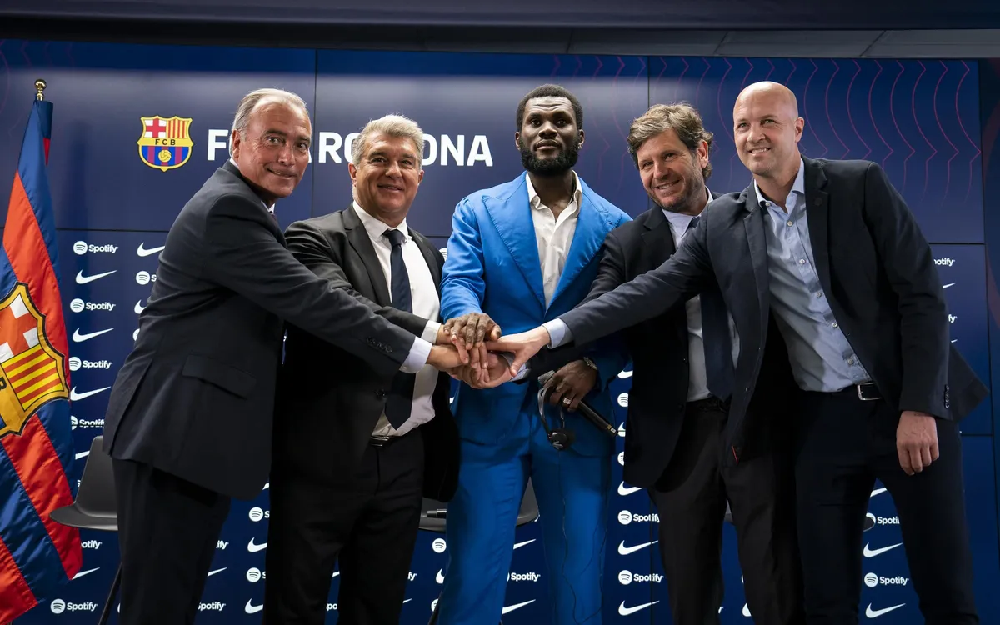
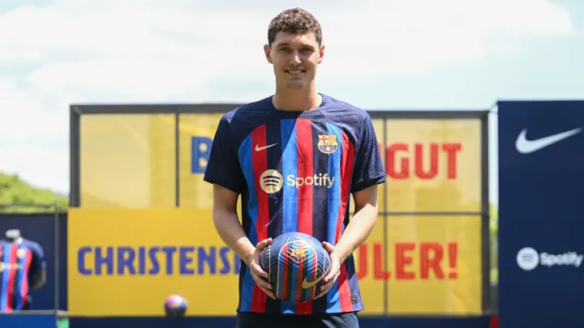
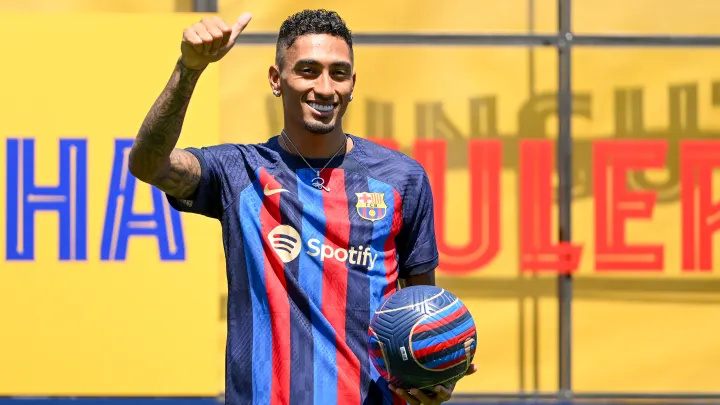

Franck Yannick Kessie is officially an FC Barcelona player! The Ivorian midfielder was presented this Wednesday at the Ciutat Esportiva Joan Gamper training ground in the company of president Joan Laporta and director of football Mateu Alemany.
The former AC Milan player used the occasion to describe how thrilled he is to be here, saying “there aren’t many players who could say no to Barça, it’s the greatest club in the world.”
“I am really looking forward to starting training and meeting all my new team-mates” he continued. “I am ready to do what the coach needs. I consider myself a midfielder, but I’ll play in whatever position he wants.”
Laporta sounded just as excited about the deal, saying “we are very pleased to have signed Kessie because we are fulfilling one of the coach's wishes.”

FC Barcelona has a new centre back, and now it really is official. Andreas Christensen was presented today in the company of president Joan Laporta and the director of the international area, Jordi Cruyff.
In his first press conference since his move from Chelsea, the Danish defender repeated many times that this had been a personal dream ever since he was a little child. In fact, as he told the media today, “when I was eight I wrote on a piece of paper that my dream was to play for Barça”.
“I have come to Barcelona to win trophies” he added. “That is my main goal.”
Ideal fit for Barça
Asked about his future role in the team, he insisted that “my aim is to play every week. There is healthy competition and there are some very good players in this team. I am looking forward to starting to work with my new team-mates.”
“I think I’ll fit in well with the way Barça play. The way FC Barcelona play is the one I feel most comfortable with."
“I can’t wait for the season to start and to play for this team because I know about everything it is able to achieve.”
Busy first day
Before appearing before the press, Christensen’s day had started with a medical at the Ciutat Esportiva. After that, he appeared on the Tito Vilanova field together with Joan Laporta, who handed him his Barça membership card before they both put pen to paper.
Moment later, he donned the Barça uniform for the first time and as well as posing for the traditional photos, he also enjoyed a kickaround with a group of youngsters from the Barça Academy.

Raphinha has officially completed his €67 million move from Leeds United to Barcelona.
After a prolonged saga which saw him heavily linked with Arsenal, Chelsea and Tottenham Hotspur, the talented winger has earned his dream transfer and he’s signed a five-year deal with the Blaugrana.
Raphinha’s official presentation as a Barcelona player was on Friday, during which he said: “It’s a dream come true since I was a kid, and of my family as well. I’m going to give my best.”
Joga Bonito is Portuguese for the ‘The Beautiful Game’ and Raphinha is certainly a player who makes the sport very easy on the eye for viewers.
The former Sporting Lisbon flyer is electric with the ball at his feet and possesses a catalogue of flicks and tricks that’s right up there with the likes of Neymar.
So it goes without saying that Raphinha’s skill moves during his Barcelona presentation were pretty darn impressive.